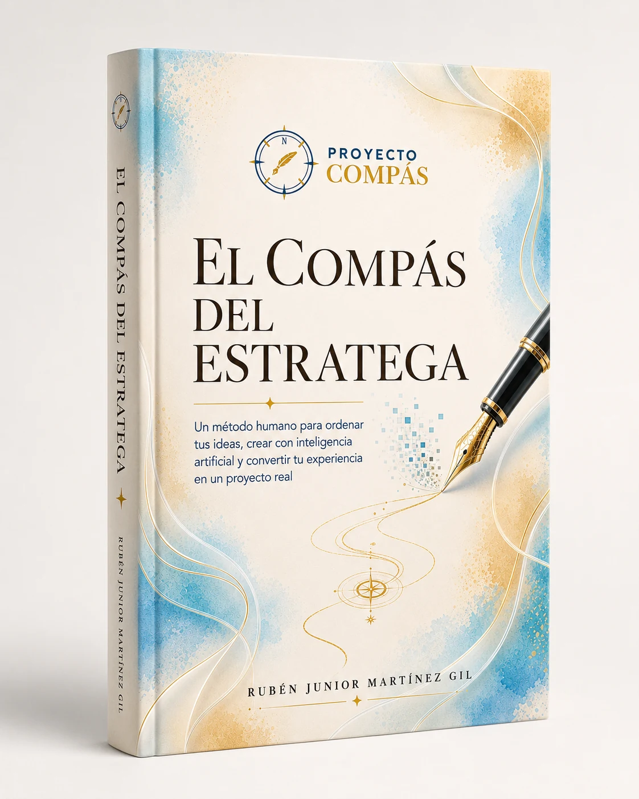

Lanzamiento oficial · 3 de agosto de 2026
El Compás
del Estratega
Un método humano para ordenar tus ideas, crear con inteligencia artificial y convertir tu experiencia en un proyecto real.
Pago completo hasta el 6 de agosto$300 MXN
Precio regular$500 MXN
La nueva ruta comienza enCuenta regresiva al lanzamiento
00Días
00Horas
00Minutos
00Segundos

Edición de lanzamiento
Proyecto Compás
Libro · Método · Ejercicios
Una dirección posible
Una ruta nacida de la experiencia
No necesitas tener todo resuelto. Necesitas reconocer el siguiente paso visible.
El Compás del Estratega no promete resultados instantáneos. Presenta una estructura práctica para reunir lo que sabes, ordenar la información, construir una primera versión, recuperar tu voz y preparar un proyecto para salir al mundo.
El libro fue pensado para quienes tienen ideas, conocimientos acumulados o una historia capaz de ayudar a otros, pero todavía no encuentran cómo convertir todo eso en una propuesta clara.
✓
Elige un solo proyecto y define a quién deseas ayudar.
✓
Utiliza la inteligencia artificial como apoyo, sin entregarle tu criterio.
✓
Produce resultados visibles que puedas revisar, corregir y compartir.
De la experiencia dispersa a un proyecto que puede desarrollarse, revisarse y presentarse.
La persona conserva la brújula. La inteligencia artificial funciona como copiloto. El método organiza el recorrido para que la velocidad no sustituya al criterio.
Captura de experiencia
Reúne recuerdos, conocimientos, preguntas y materiales sin exigir una estructura perfecta.
Resultado: inventario y mapa de valor.Orden y modularización
Agrupa las piezas, define su función, establece prioridades y crea una secuencia.
Resultado: mapa modular y estructura.Modelado del contenido
Convierte un módulo en una primera versión que pueda evaluarse antes de perfeccionarse.
Resultado: borrador funcional.Personalización y voz humana
Incorpora experiencia, lenguaje, principios, límites y una revisión responsable.
Resultado: contenido auténtico.Ágiles soluciones digitales
Selecciona herramientas, conecta un flujo comprensible y automatiza solo lo estable.
Resultado: solución funcional.Salida al mundo
Prepara, publica, acompaña, mide y aprende con las señales de usuarios reales.
Resultado: proyecto real.Cinco resultados para dejar de reconstruir tu idea cada vez que piensas en ella.
Inventario de experiencia
Reúne lo que sabes, has vivido, observado y aprendido.
Mapa de valor
Reconoce qué parte de tu experiencia puede ayudar a otra persona.
Estructura modular
Convierte información dispersa en una secuencia comprensible.
Primer borrador
Construye una versión visible para probar, revisar y corregir.
Plan de salida
Define cómo presentarás, acompañarás y mejorarás el proyecto.
Para personas con experiencia que necesitan una dirección clara.
No necesitas considerarte escritor ni dominar todas las herramientas digitales. Necesitas estar dispuesto a revisar, decidir y completar el siguiente resultado.
Autores principiantes
Personas con una idea, historia o aprendizaje que desean convertir en un libro.
Emprendedores
Quienes desean transformar su experiencia en un producto, servicio o método.
Capacitadores
Profesionales que necesitan ordenar su conocimiento para enseñarlo con claridad.
Creadores independientes
Personas con muchas ideas que necesitan elegir, organizar y terminar una.
Webinar gratuito · 8 de agosto de 2026 · Zoom
Conoce la esencia del método antes de elegir tu siguiente paso.
Durante el webinar trabajaremos tres preguntas centrales:
- ¿Qué valor existe en tu experiencia?
- ¿Qué proyecto podrías construir con ella?
- ¿Cómo puede ayudarte la IA sin reemplazar tu voz?
08 · 08 · 2026
Tu experiencia ya tiene valor.
El siguiente paso es darle dirección.
Registro gratuito · acceso por Zoom · libro digital en Aula Compás
Preventa de lanzamiento
Apartar por WhatsApp →
El libro es digital, no requiere envío y se entregará dentro de Aula Compás el 8 de agosto. El pago en línea mediante Mercado Pago se habilitará próximamente.
Aparta tu ejemplar y acompaña el inicio de esta nueva etapa.
Aparta tu libro digital con $100 MXN, cantidad que se descontará del precio regular de $500 MXN. También puedes aprovechar el precio especial de pago completo de $300 MXN hasta el 6 de agosto.
Apartado descontable$100MXN
Pago completo hasta 6 de agosto$300MXN
Regular$500MXN
Antes de apartar tu ejemplar.
Estas respuestas pueden actualizarse conforme avance el proceso de lanzamiento.
¿Cuándo se presenta oficialmente el libro?+
El lanzamiento oficial de El Compás del Estratega y Aula Compás será el 3 de agosto de 2026 a las 7:00 p. m., hora de Guadalajara, México. El evento será en línea por Zoom y el enlace se enviará a las personas registradas.
¿Cuánto cuesta el libro?+
El precio regular es de $500 MXN. Puedes apartarlo con $100 MXN, cantidad que se descuenta del precio regular. También hay un precio especial de pago completo de $300 MXN válido hasta el 6 de agosto de 2026.
¿Cómo realizo mi apartado?+
Presiona cualquiera de los botones de apartado. Se abrirá WhatsApp con un mensaje dirigido a Proyecto Compás para continuar el proceso.
¿Necesito experiencia con inteligencia artificial?+
No. El libro explica cómo utilizar la IA como herramienta de apoyo, manteniendo el criterio, la responsabilidad y la voz humana.
¿El webinar del 8 de agosto tiene costo?+
No. El webinar es gratuito y requiere registro previo por WhatsApp para recibir el acceso de Zoom. El libro digital se entregará ese mismo día dentro de Aula Compás a quienes hayan realizado su compra.
¿El libro es impreso o digital?+
Esta edición es digital. Se entregará dentro de Aula Compás el 8 de agosto de 2026, por lo que no hay costos de envío.
¿Cómo recibiré acceso a Aula Compás?+
Cualquier persona puede crear una cuenta. Los contenidos gratuitos se habilitan directamente y los productos de pago se asignan después de confirmar la compra.
Una idea deja de ser solo una posibilidad cuando encuentra dirección.